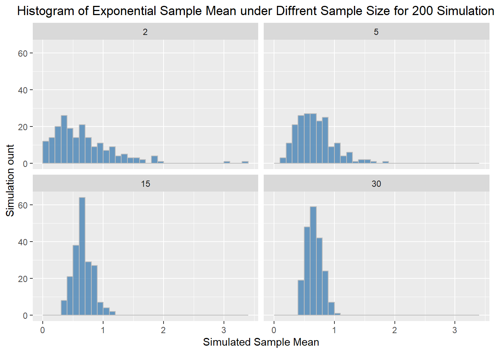

Homework 3 Answers
If you find any typos or errors, please feel free to contact me via email at r13323002@ntu.edu.tw. I would appreciate it and will correct the solution to prevent any misunderstandings.
For some R commands marked with ‘OPTIONAL,’ you don’t need to learn them. You will be completely fine on the computer quiz even if you choose to ignore them.
If you’re having trouble understanding the code, don’t hesitate to ask me for help. I’ll do my best to assist you during office hours or after the TA session.
# clear the mamory and import package
rm(list = ls())
library(tidyverse)
set.seed(2025)1 Computer Exercises
1.1 CLT Simulation with Uniform Distribution
# 1. Define distribution parameters, draw size, and simulation size
uniform_min <- -2
uniform_max <- 2
draw_size <- c(2, 5, 15, 30)
simulation_size <- 200
# 2. Define function to:
# (1) draw uniform sample according to different draw size;
# (2) compute sample mean and return the mean
sample_mean_unif <- function(n){
samples <- runif(n, min = uniform_min, max = uniform_max)
mean <- mean(samples)
return(mean)
}
# 3. Before simulation, create an empty DataFrame for storing the simulation result later
result <- data.frame()
# 4. Draw sample according to different draw sizes
for (n in draw_size){
## 4.1 Given the draw size, draw sample and compute mean for 200 times
simulated_sample_means <- replicate(simulation_size, sample_mean_unif(n))
## 4.2 Store the sample means in temporary DataFrame `df`
## `df` is a 200 x 2 DataFrame. Check it by yourself
df <- data.frame(
draw_size = n,
means = simulated_sample_means
)
## 4.3 We store the simulation result by appending the sample means `df` to `result`
## so 'result' now should have 200+200+200+200 = 800 rows. Check it by yourself
result <- rbind(result, df)
}
# 5. Draw histogram
ggplot(data = result, aes(x = means)) +
geom_histogram(binwidth = 0.1, fill = "steelblue", color = "gray", alpha = 0.8, boundary = 0.1) +
facet_wrap(~draw_size) +
labs(
x = "Simulated Sample Mean",
y = "Simulation ount",
title = paste0("Histogram of Uniform Sample Mean under Diffrent Sample Size for 200 Simulations.")
) +
theme(plot.title = element_text(hjust = 0.5))Note that the mean of these histogram are all zero. Besides, as the size of draws increases, the sample variation decreases since the histogram became more centered.
1.2 CLT Simulation with Exponential Distribution
# 1. Define distribution parameters, draw size, and simulation size
lambda <- 1.5
draw_size <- c(2, 5, 15, 30)
simulation_size <- 200
# 2. Define function to:
# (1) draw exponential sample according to different draw size;
# (2) compute sample mean and return the mean
sample_mean_exp <- function(n){
samples <- rexp(n, rate = lambda)
mean <- mean(samples)
return(mean)
}
# 3. Before simulation, create an empty DataFrame for storing the simulation result later
result <- data.frame()
# 4. draw sample according to different draw sizes
for (n in draw_size){
## 4.1 Given the draw size, draw sample and compute mean for 200 times
simulated_sample_means <- replicate(simulation_size, sample_mean_exp(n))
## 4.2 Store the sample means in temporary DataFrame `df`
## `df` is a 200 x 2 DataFrame. Check it by yourself
df <- data.frame(
draw_size = n,
means = simulated_sample_means
)
## 4.3 We store the simulation result by appending the sample means `df` to `result`
## so 'result' now should have 200+200+200+200 = 800 rows. Check it by yourself
result <- rbind(result, df)
}
# 5. Draw histogram
ggplot(data = result, aes(x = means)) +
geom_histogram(binwidth = 0.1, fill = "steelblue", color = "gray", alpha = 0.8, boundary = 0.1) +
facet_wrap(~draw_size) +
labs(
x = "Simulated Sample Mean",
y = "Simulation ount",
title = paste0("Histogram of Exponential Sample Mean under Diffrent Sample Size for 200 Simulations.")
) +
theme(plot.title = element_text(hjust = 0.5))
Note that the mean of these histogram are all 1/1.5. Besides, as the size of draws increases, the sample variation decreases since the histogram became more centered.
2 Textbook Exercise
2.1 Question 5.8
Recall that the general formula is point estimate \(\pm z^* \times \text{SE}\).
First, identify the three values. The point estimate is 52%, \(z^* = 2.58\) for a 99% confidence level, and \(\text{SE} = 2.4\).
\[ 52\% \;\pm\; 2.58 \times 2.4\% \;\;\longrightarrow\;\; (45.8\%,\, 58.2\%). \]
We are 99% confident that 45.8% to 58.2% of U.S. adult Twitter users get some news on Twitter.
2.2 Question 5.10
False. 50% is included in the 99% confidence interval, hence a null hypothesis of \(p = 0.50\) would not be rejected at this level.
False. The standard error measures the variability of the sample proportion and is unrelated to the proportion of the population included in the study.
False. We need to increase the sample size to decrease the standard error.
False. As the confidence level decreases, so does the margin of error, and hence the width of the confidence interval.
2.3 Question 5.18
First, the hypotheses should be about the population proportion (\(p\)), not the sample proportion.
Second, the null value should be what we are testing (0.25), not the observed value (0.24).
The correct way to set up these hypotheses is:
\[ \begin{cases} H_0: p = 0.25 \\ H_A: p \ne 0.25 \end{cases} \]
2.4 Question 5.26
Scenario I is higher. A sample mean based on less data tends to be less accurate and has a larger standard error.
Scenario I is higher. A higher confidence level \(\Rightarrow\) a larger margin of error.
They are equal. For a given \(Z\)-score the p-value depends only on the \(Z\) value, not on the sample size.
Scenario I is higher. If the null is harder to reject (smaller \(\alpha\)), we are more likely to make a Type II error when the alternative is true.
2.5 Question 5.32
Prepare — Hypotheses
\[ \begin{cases} H_0: p = 0.08,\\ H_A: p \ne 0.08 . \end{cases} \]
Use significance level \(\alpha = 0.05\).
Check
Simple random sample \(\Rightarrow\) independence.
Success–failure condition: \(21 \ge 10\) and \(194-21=173 \ge 10\).
Calculate
\[ \hat p = \frac{21}{194} = 0.108 \]
\[ SE = \sqrt{\frac{0.08(1-0.08)}{194}} = 0.0195 \]
\[ Z=\frac{0.108-0.08}{0.0195}=1.44 \]
A one–tail area is about \(0.075\), so the two–sided p-value is \(2\times0.075 \approx 0.15\).
Conclude
Because the p-value (\(0.15\)) is greater than \(\alpha=0.05\), we do not reject \(H_0\).
There is not convincing evidence that the fraction of children who are nearsighted differs from \(0.08\).
2.6 Question 5.36
As the sample size increases, the standard error decreases.
For the same true effect, the test statistic (e.g., \(Z\)) increases, and the p-value decreases.